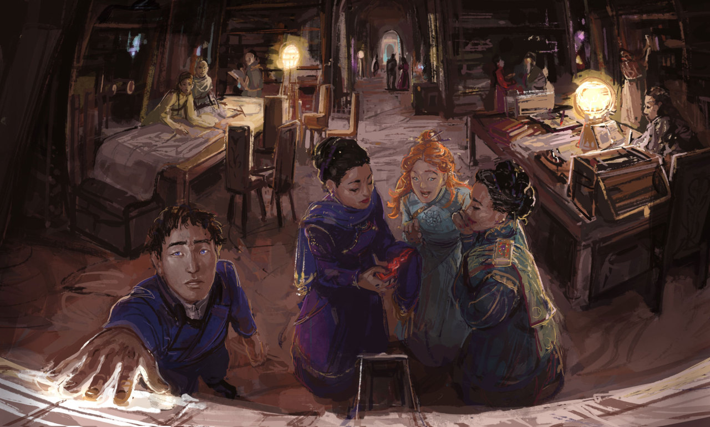
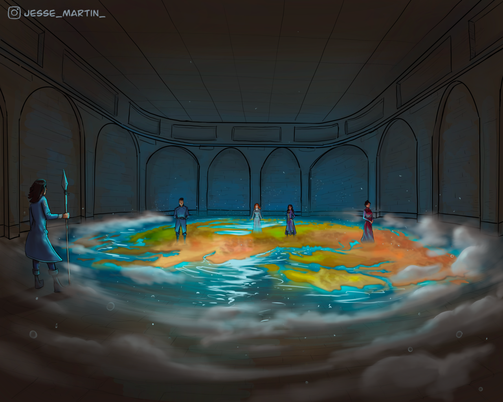
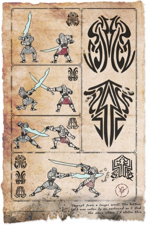
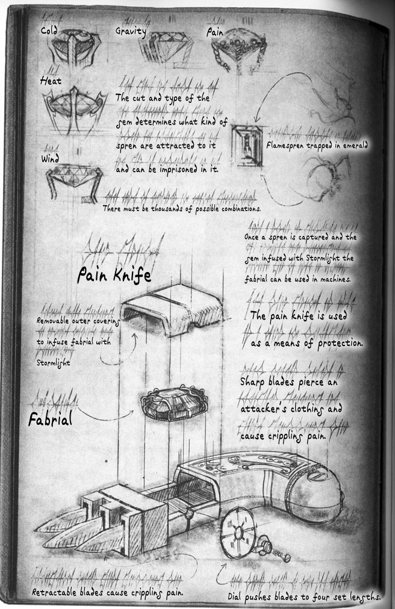

“ Ahora que abandonamos la torre, ¿puedo finalmente admitir que odio este lugar? Demasiadas reglas. ”

Urithiru: Ciudad de Reyes
ACTIVIDADES QUE SE REALIZAN EN LA CIUDAD
—Del cajón 8-1, amatista.[1]

Archivo de Gemas.[2]
Contenido
ACTIVIDADES POLITICAS
1. Los grandes mandatarios de Roshar se reunen acá para discutir temas de vital importancia, tales como la supervivencia de la raza humana en el planeta
2. Las Puertas Juradas funcionan como medio de transporte por las prícncipales capitales de Roshar, siendo Urithiru el punto medio de cualuier trayecto, haciendo las veces de peaje.
3. Debido a los Caballeros Radiantes actualmente Urithiru es el centro de poder político, militar y económico de Roshar.

Sala de Mapas.[3]
ACTIVIDADES CULTURALES Y RELIGIOSAS
1. Se practican duelos en diversos pisos de la torre.
2. Hay iglesias vorin que enseñan la misma doctriba.
3. Se realizan estudios de erudición en la ciudad-torre
4. Los Caballeros Radiantes y soldados razos entrenan en la ciudad.

Formas de pelea.[4]
ACTIVIDADES TECNOLOGICAS
Urithiru tiene actualmente a los mejores artifabrianos, siendo la ciudad la cuna de la tecnología punta en Roshar, con fabriales de todo tipo y los primeros diseños de naves voladoras.

Fabrial de Navani.[4]